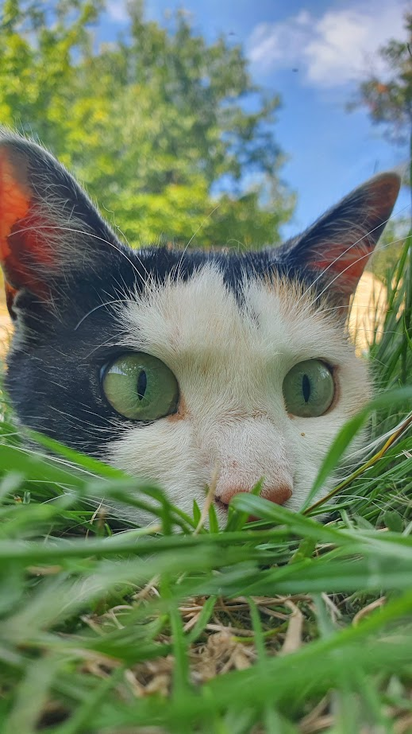

Szia ez egy nagyon híres streamer lol nem híres
hihi uncsizok
.png)
Története
Az Amerikai Egyesült Államokból származó, viszonylag újnak mondható fajtát az 1960-as évek elején Ann Baker tenyésztette ki, a kaliforniai Riversideban. A ragdoll egy perzsa nőstény és egy burmai szent templommacska keresztezéséből jött létre. A Josephine nevű nőstény perzsa macskát a vemhessége alatt elütötte egy autó, ám túlélte a balesetet, viszont a viselkedése megváltozott, szelíd és gyengéd lett. Kölykei is örökölték tőle ezt a temperamentumot, és a tenyésztőjük megpróbálta ezeket a természeti jegyeket továbbörökíteni a fajtában, ám a külső környezeti hatásra bekövetkező tulajdonság változást nem lehet örökíteni. Az persze lehetséges, hogy egy baleset következtében valóban megváltozott Josephine jelleme, de ez nem játszott szerepet abban, hogy a kölykei is barátságos, jámbor cicák lettek.
Testfelépítése

A ragdoll nyúlánk és elegáns, izmos testfelépítésű, nagy méretű macska. Általában négyéves korára alakul ki a végleges mérete. Rövid nyak, és telt mellkas jellemzi. Sokkal vastagabbak és hosszabbak a hátsó lábai. Nehéz csontozatú, a kerek, nagy mancsain pedig a lábujjak között szőrpamacsok találhatóak. A test többi méretével arányos hosszúságú, bozontos farka van. Közepes nagyságú feje ék alakú. Fülei távol állnak egymástól, közepes nagyságúak, a végükön lekerekítettek. Orra kissé boltozatos. Erős álla, és jól fejlett pofazacskója van. Ovális alakú szemei nagyok. Félhosszú, selymes szőre szorosan a testéhez simul. A nyakán, a farkán és a bricsesznél valamivel hosszabb a szőre. Csupán colorpoint mintával tenyésztik ezt a fajtát. Ehhez a mintához pedig kék szemszín párosul. A háromféle variáció (colorpoint, zoknis, bikolor) közül a bikolor a legnépszerűbb. Ennek a mintának az a jellegzetessége, hogy a has, a mellkas, a lábak és a mancsok teljesen fehérek, emellett jellegzetes a fordított V alakú fehér jegy a pofán. Különlegesség, hogy a kölykök teljesen fehéren jönnek a világra, és csak később (kb. 10 nap múlva) jelennek meg rajtuk fokozatosan a különböző színek és rajzolatok.
Viselkedése
A ragdoll az egyik legbarátságosabb macskafajta, nagyon könnyű elnyerni a bizalmát, oda kell rá figyelni, nehogy elszökjön, vagy elmenjen idegenekkel. Társaságkedvelő, mind az emberét, mind más macskákét vagy kutyákét szereti, de a kisgyerekekkel is nagyon jól kijön.